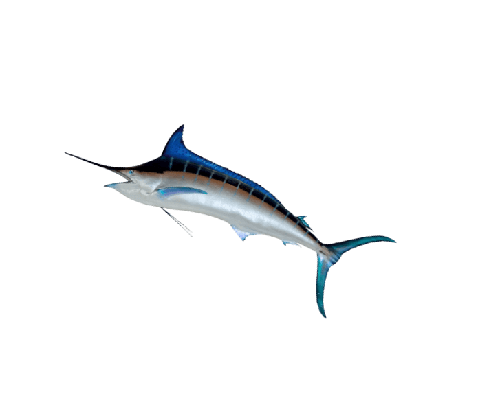

-
原則一:常見種 > 稀有種
→選擇數量多、常見的種類，避免稀有、瀕危種類
如沙丁魚、竹筴魚及秋刀魚等，屬於體型小、生長速度快，野外數量尚豐富，因此建議食用；過去因過度撈捕而禁捕的鯨鯊，以及最近才列入保育類的隆頭鸚哥魚及曲紋唇魚（俗稱蘇眉或龍王鯛）等，因體型大、成長慢，過度利用後資源不易恢復、易瀕危，應避免食用。
-
原則二:洄游種＞定棲種
原則三:銀白色＞有色彩
原則四:沙泥棲性＞岩礁棲性→選擇體色銀白色的洄游性魚類，避免有明顯體色、大多棲息於岩礁的定棲性種類
因這些棲息於中表水層之洄游魚類，目前因數量較多、撈捕的方法不會破壞海底環境，屬於建議食用種類；體色鮮艷的珊瑚礁魚類如鸚哥魚、紅石斑等，則因為數量較少、定棲性魚類資源恢復較不易，屬於避免食用種類。
-
原則五:不買非永續漁法的漁獲
→選擇永續漁法的漁獲
如選擇以不易發生混獲的漁法所取得的魚類，如一支釣的鰹魚、鏢旗魚，或對環境干擾較少的漁法所捕撈的海鮮，例如櫻花蝦，因為捕撈櫻花蝦採用中層網，不會接觸到海底；避免選擇以底拖網等方法撈捕的野生海蝦。
-
原則六:以食物鏈底層的海鮮-底食原則
→選擇屬於食物鏈底層的海鮮
如過濾海水的文蛤、牡蠣等，或食藻類的鮑魚、九孔等螺貝類，或以浮游動物、小魚為食物的種類，這些種類因食物來源豐富，數量也相對較多；鯊魚、鮪魚等大型掠食性魚類，則因位於生態系食物金字塔的頂端，數量較少，許多種類已因過度捕撈大量減少，因此除了瀕危及保育物種已禁止捕撈外，都應盡量避免選擇。
-
原則七:不買以下雜魚為餌料之養殖水產
→選擇餵食植物性餌料的養殖種類，避免動物性來源為餌料
如選擇台灣鯛（吳郭魚）、虱目魚等，因為牠們的餌料屬於植物性來源；應避免食用動物性餌料的肉食性養殖魚類，如石斑、鮭魚及養殖蝦等，因為這些餌料的來源多是野生魚類（魚粉），甚至是由底拖網混獲的下雜魚所製成的。
-
原則八(距離):在地生產 > 國外生產海鮮
→選擇台灣在地生產海鮮
台灣沿近海域漁船在捕撈過程，相較於遠洋船隊有較低的能源消耗，溫室氣體排放量相對少，對環境相對友善。
